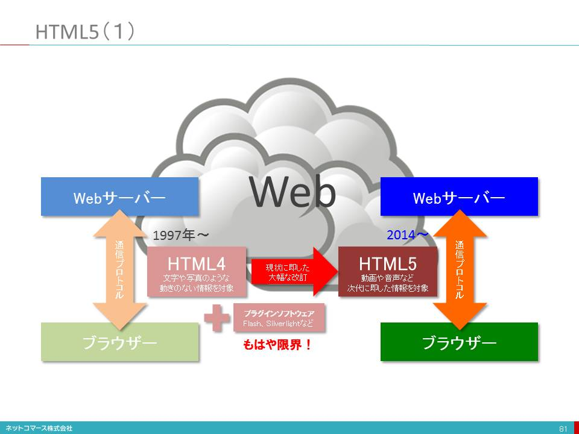

-
- コレ1枚でわかるモバイルとウェアラブル
- 「ムーアの法則」と「メトカーフの法則」
- ITトレンドを理解する上で、「ムーアの法則」と「メトカーフの法則」は、理解しておくといいでしょう。ともに経験則ではありますが、ITの進化を説明する法則として、広く知られています。
- ムーアの法則
- インテルの創業者、ゴードン・ムーア氏は、1965年に「半導体の集積密度は18～24ヶ月で倍増する」という法則を提唱しました。
- ただ、ムーアの法則は半導体の微細加工技術の発展を根拠としているため、微細化が原子レベルにまで到達してしまうと通用しなくなるとも言われていますし、もはやそれが現実になろうとしています。しかし、「集積密度」を「性能向上」に置き換えて考えると、設計手法や実装技術の革新も相まって、この法則は、まだこれからも通用するとの考えもあるようです。
- 確かに、巨大なメインフレーム・コンピュータの時代から、それを遥かに凌ぐ性能を持った小さなスマートフォンやウェアラブルへと発展してきた歴史を考えると、まさにこの法則の通りだったことが分かります。
- メトカーフの法則
- イーサネット発明したロバート・メトカーフ氏は、1995年に「通信ネットワークの価値は、接続するシステムの数の二乗に比例する」という法則を提唱しました。
- 彼がこの法則を提唱したのは、ネットワークが、まだ、デスクトップ・コンピューターやファックス、固定電話機などで構成されていた時代でした。しかし、今では、インターネットの普及により、数十億のデバイスがネットワークにつながっています。また、ウェアラブルやIoTの普及は、この勢いを加速しています。
- これに伴い、ネットワークの価値は、これまでにも増して飛躍的に高まり、IT全体の価値をも高めてゆくことになるでしょう。
- パソコンとモバイルデバイスの違い
- モバイルデバイスが変えたIT利用シーン
- ユーザーからの簡便な情報発信と共有
- ウェアラブル・デバイスの登場
- ウェアラブル・デバイスの種類と使われ方
- 身につけるデバイスと言っても、人はそれほど多くのものを身につけているわけではありません。一般的には、衣服、眼鏡、時計くらいで、ウェアラブル・デバイスもこれらを代替するものが大半です。変わったところでは、靴に取り付けランニングの距離やスピードを、ゴルフ・クラブに取り付けてスイングの状態を、テニス・ラケットのグリップ・エンドに取り付けてスイングや身体の動きを取得するといったアクティビティ・トラッカーも広い意味ではウェアラブル・デバイスと言えるかもしれません。これらデータは、スマートフォンのアプリや、その先につながるクラウド・サービスに送られ様々な機能を提供します。
- ウェアラブルは、本格的な活用が始まったばかりです。現在はスマートフォンに着信した電話やメールを音や振動で通知したり、音声認識を使って簡単なメッセージを返信したりする機能が主流ですが、それに留まらない大きな可能性を秘めています。
- 特に、今後の新しい使い方として注目されているのが、生体情報の利用です。脈拍や血圧、発汗量などを収集して健康管理や予防医療に役立てる取り組みが始まっています。Googleは、コンタクトレンズ型の血糖値センサーを開発し、コンタクトレンズ・メーカーと一緒になって、その実用化を進めています。
- 一方で、新しいデバイス故の問題点も指摘されています。カメラ機能を持った眼鏡型デバイスをかけた人が、プライバシーへの配慮からレストランへの入店を断られるといったことや、生体情報といったセンシティブな情報をどう取り扱うかも気になるところです。新しいデバイスであるが故のルールの整備やコンセンサスの醸成は、今後の課題となるでしょう。
- モバイル・ウェアラブルとクラウドとの関係
- モバイル・デバイスの歴史
- iPhoneの成功とその理由
- クラウドとモバイルの関係
- クライアントプラットフォームの変遷
- クライアントの変遷
- 【図解】コレ１枚でわかるクライアントの歴史
- 1950年代、ビジネス・コンピューターの黎明期、ユーザーインターフェイスは、キーボードとプリンターが一体となったテレタイプ端末と言われるものが主流だった。その後、1970年代に入り、タイムシェアリングの普及と共にブラウン管式のディスプレイ端末が使われるようになる。しかし、表示できるのはモノクロの文字だけだった。その後、カラーで文字表示できる端末も登場したが、いずれも「文字（テキスト）」という限られた範囲での表現力しか持たなかった。
- 1980年代に入り、ビジネスの現場でパーソナル・コンピューターが使われるようになる。そこで、このPCを当時主流となっていた大型のメインフレーム、オフコンやミニコンと言われた小型コンピューターの端末として使われるようになる。当初は、PC上に端末エミュレーターを動かし「テキスト端末」として使われるのが一般的だった。その後、ミニコンやオフコンに加え、PCサーバーが登場する頃になると、主要な業務処理や組織で共有すべきデータの保管は、上位のコンピューターに任せ、入力画面のレイアウトやデータの加工・編集といった比較的軽いアプリケーション処理やユーザーインターフェイスに関わる処理はPCに任せ、上位のコンピューターと役割分担するクライアント・サーバー方式が普及した。
- 当時、ネットワークの速度は遅く、コンピューターの処理能力も高くなかった。そのため、上位のサーバー・コンピューターで表現力豊かな画面データを生成し送るのは、現実的ではなかったためだ。そこで、ユーザーの手元にあるPCの処理能力を活かし、高い表現力を手に入れようとした。その代表的なソフトウェアのひとつが、1989年に登場したグループウェアLotus Notesだ。
- クライアント・サーバー方式の登場により、ユーザーは高い表現力を手に入れることができたが、その一方で、サーバー・アプリケーション毎にクライアントPCに対応するアプリケーションを導入しなければならない。そのため、各アプリケーションについてバージョンアップやプログラム修正のたびに全てのクライアントPCをアップデートしなければならないため運用管理負担が増大することになる。このような多くのクライアント・アプリケーションを抱え込んだPCは、「Fat Client（でぶっちょクライアント）」とも言われている。
- 1995年、Windows95が、登場する。これには、WebブラウザーであるInternet Explorerが、無償で付いてきた。そこで、このブラウザーをクライアント機能として使おうというWebシステムという考え方が生まれてきた。
- ブラウザーを使えば、テキスト端末より高い表現力が得られる。しかも、PCには、ブラウザーを導入するだけなので、クライアント・アプリケーションの運用管理負担から解放される。そんな理由から、Webシステムが、普及することになった。しかし、当時のブラウザーは、静的な文書の閲覧が主な用途であり、また、回線の速度も遅かったことからサーバー・コンピューターから大きな画面データを送ることは現実的ではなかった。そのため、レイアウトの自由度や画像を使うなどにより、テキスト端末より表現力は高まったもののクライアント・サーバーほどの表現力を持たせることはできなかった。そのため、クライアント・サーバーと併存することになる。なお、1996年、クライアント・サーバーで一世を風靡したLotus NotesもLotus Notes/Dominoという名称で、ブラウザーから使える機能をリリースしている。
- 回線速度の向上やインターネットの普及とともに、ブラウザーで高い表現力を実現しようという動きが始まる。それが、プラグイン・プログラムを使う方法だ。ブラウザーは、それ自体、静的な文書の閲覧のためのものだった。ただ、外部プログラムとのインタフェイスをオープンにしていたことから、これを使って高い表現力を実現しようという方法が生まれた。1996年に登場したFlashは、その先駆けとなった。Flashの登場により、ブラウザーであってもPCネイティブと遜色のない表現力を実現できると言うことで、その後Flashは広く普及してゆく。Flash同様のプラグインとして、その後、SilverlightやCurlなどが登場する。
- これらプラグイン・プログラムで動作するアプリケーション・プログラムをRIA（Rich Internet Application）、そのクライアントとなるプラグインが動作するブラウザーをRIC（Rich Internet Client）と呼ぶ。
- このような方法で表現力を高めたブラウザーではあるが、その表現を規定するHTML言語は、1997年に正式勧告されたHTML4.0、1999年に若干の修正が加えられたHTML4.01以降、大きな変更が加えられないままに使われてきた。それをプラグインで機能を補完してきたわけだが、回線の高速化やモバイル・デバイスの普及など当時の状況とは大きく変わってしまい、プラグインでの対応にも限界が見え始めた。そのため、2014年、プラグインを使わなくてもブラウザーの機能だけで高い表現力やモバイル・デバイスとの対応を可能にするHTML5.0が勧告されることとなった。
- HTML5.0、その前身となったAjaxについては、後日「コレ１枚」で紹介する。
- Ajaxの登場
- ブラウザーの進化とAjax
- HTML5（１）
- 
- 1990年代初頭、文字や写真のような動きのない情報を、インターネットを介して交換するための手段として登場したのがウェブです。しかし、現在では、動画再生やビデオ会議、ゲームなど動きのある対話型のアプリケーションが動作するプラットフォームとして利用されています。
- この仕組みを実現しているのが、情報を送り出すウェブサーバーと、その情報を表示するブラウザ、そして、情報をやり取りする手順である通信プロトコルです。この組合せは、ひとつではありません。例えば、ブラウザだけでも、MicrosoftのInternet Explorer、MozilaのFireFox、AppleのSafari、GoogleのChromeなどがあります。ウェブサーバーや通信プロトコルにもいろいろなものがあります。このように異なるソフトウェアを使ってもお互いに情報のやり取りができ同様の表現にできるのは、情報の構造やブラウザへ表示方法を指定するHTML（ハイパーテキストマークアップ言語）が標準化され、共通に利用できるからです。
- しかし、このHTMLも1997年にバージョン4（HTML4）が定められ、1999年に4.01にマイナー・バージョンアップされて以降、大きな改訂もないままに今日まで使われてきました。その間、ネットワークの高速化やコンピュータの性能向上、GPSやセンサーが組み込まれたスマートフォンの出現など、当時とは利用環境が、大きく変わってしまいました。
- この状況に対応するために、HTML4はそのままに、動画や音声を再生するなどのHTML4には含まれない機能をプラグイン（Flashなど）といわれるソフトウェアを追加して補完してきたのです。しかし、このような対処ではもはや限界が見えてきました。そこで、時代にふさわしい改訂が求められるようになり、次代を担うHTML5を定める取り組みが生まれたのです。
- 2014年10月、HTMLは、15年の歳月を経て新しいバージョンとしてW3Cより正式に勧告されました。今後は、このHTML5を基盤として新たな取り組みが進められることになります。
- HTML5（２）
- HTML5には、狭義と広義の意味があります。狭義には、ウェブの標準化団体「W3C（World Wide Web Consortium）」が規格を策定した次世代のマークアップ言語そのものを指しています。ブラウザで表示する内容の構成やレイアウトの指定、動画や音声、2次元グラフィックスの取り扱いなどを定めています。広義には、これに加えて、ネットワークに接続されていないときにもデータを加工・編集するためのオフラインストレージ、スマートフォンなどのハードウェアに内蔵されるGPSやセンサーをブラウザで扱うためのデバイス連携、豊かな表現を実現する3次元グラフィックスなど、ブラウザ上で高度で複雑なアプリケーションを動かすための機能の扱いまで含めています。つまり、次世代のアプリケーション・プラットフォームを実現するための方法や手順を標準化したものという意味で使われます。
- 広義の意味でのHTML5には、従来プラグインで実現していた機能の多くが含まれています。HTML5のゴールのひとつはここにありました。つまり、特定のメーカーが提供する技術に頼るのではなく、誰もが自由に利用できるオープンな標準として実現することです。
- 実際、2010年のAppleのiPhoneでAdobeのFlash（当時のウェブにおける動画や音声を利用するための事実上の標準となっていたプラグイン）をサポートしないという発表はオープンではないことの課題を露呈しました。その後、iPhoneやiPadが広く使われるようになり、HTML5による動画や音声の配信が一気に普及したのです。
- 現在では、HTML5はウェブだけでなく、スマートフォン向けアプリケーションや企業向けシステムなどの開発にも利用されるようになり、マルチデバイス時代のアプリケーション技術として普及しつつあります。
- モバイルファースト・モバイルシフトの波